TYPE IN MOTIONDESIGN STUDY / 01READ IT. FEEL IT.
MAKE
IT MOVE.

A MESSAGE
WITH MOMENTUM.
WITH MOMENTUM.
Set the rhythm.
Leave room for meaning.
FORM → RHYTHM → MEANING → FORM → RHYTHM → MEANING →
LOUD TYPE. CLEAR THOUGHT.01 / 03KEEP THE MESSAGE MOVING ↗